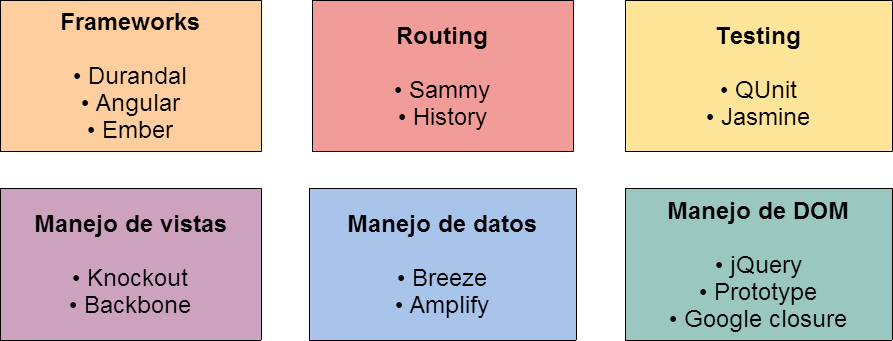

Single Page Applications
Diego Cardozo
github.com/diegocard/SPA-PresentationTemas
-
Motivación
-
Introducción
-
Ejemplos
-
Arquitectura
-
Ventajas y desventajas
-
Herramientas
-
Demo
Motivación (1)
Uno de los factores principales para la experiencia
de usuario es el tiempo de carga.
- Para mejorarlo, conocemos varias técnicas:
-
Minimizar scripts y CSS
-
Combinar imágenes en un único sprite
-
Retardar la ejecución de JavaScript
-
Manejo especial de archivos estáticos (CDN)
-
Caché de recursos
Motivación (2)
Sin embargo, aún con caché el browser debe:
-
Volver a parsear y ejecutar el código CSS y JavaScript.
-
Descargar y parsear todo el código HTML.
-
Aún cuando sólo haya cambiado un pequeña parte.
-
Reconstruir el árbol DOM.
-
Renderizar la interfaz.
- El usuario ve como la página se construye mientras espera.
Motivación (3)
En resumen, SPA surge como una respuesta a las preguntas:
-
¿Como podemos lograr un manejo mas eficiente?
-
¿Podemos cargar solamente lo nuevo o necesario?
- ¿Como podemos mejorar la experiencia del usuario?
Introducción (1)
¿Que es una SPA?
-
Es un nuevo enfoque para construir aplicaciones web.
-
Todo el código se carga en la primera llamada o posteriormente de forma dinámica, sin recargar la página.
-
La navegación se resuelve en el cliente.
-
Las llamadas al servidor se hacen de forma asincrónica.
- La interfaz se construye en el cliente.
Introducción (2)
Que NO es una SPA
-
Unir todas las páginas del sitio en una sola y cargarla estáticamente.
-
Blanco o negro, existen enfoques híbridos.
-
Una bala de plata: puede no servir para todos los casos o proyectos.
Introducción (3)
¿Que puede hacer una SPA?
-
Cambios de URL y navegación hacia atrás y adelante.
-
Manipulación de DOM del lado del cliente.
-
Esperar a que la vista se cargue antes de mostrarla.
-
Almacenar páginas ya cargadas en el cliente.
Ejemplos
-
GMail
- Esta presentación
Arquitectura
Ventajas y desventajas (1)
Ventajas
-
Interfaz mas rápida.
-
Mantenimiento más sencillo.
-
Distribución de carga.
-
Comienzo del desarrollo más ágil.
-
La interfaz es simplemente otro cliente.
-
Se presta muy bien para testing.
- Perfecto para combinar con aplicaciones móviles.
Ventajas y desventajas (2)
Desventajas
-
La primera carga puede ser lenta.
-
SEO se vuelve complejo.
-
Require JavaScript habilitado.
-
Requiere conocimiento adicional de JavaScript.
- Rompe con las convenciones de analytics, ads y widgets.
Ventajas y desventajas (3)
Otros aspectos
-
Trasladamos la lógica de negocio no crítica al cliente.
-
Antes nuestro código era 90% C#/VB y 10% JS.
-
Ahora para a ser a 50 y 50.
No es una ventaja o desventaja, pero vamos a precisar un juego distinto de herramientas para mantener buenas prácticas.
Herramientas (1)
Desarrollo del cliente
Herramientas (2)
Knockout.js
- Knockout creado por Steve Anderson
- PM de ASP.NET en Microsoft.
- Utiliza MVVM, patrón de diseño creado por John Smith
- MVP en Microsoft por su trabajo en WPF.
- Se puede utilizar aún cuando no desarrollamos SPA.
- Incluído por defecto junto con los templates de MVC4.
Herramientas (3)
Desarrollo del servidor
-
En MVC, nuestros controladores pasan a ser ApiControllers para definir un API RESTful.
-
Implementamos una sola vista (layout).
-
No vamos a utilizar Razor para renderizar las vistas.
-
Vamos a ver un template para Visual Studio que trae un proyecto pre-configurado para SPA (Hot Towel SPA).
Demo (1)
- Partimos del template Hot Towel SPA de John Papa
- Vamos a ver los principales componenetes de Durandal
- Ver cada componente a fondo llevaría demasiado.
- En el servidor recorremos el API RESTful
- Expone los datos de los usuarios.
- Agregamos una funcionalidad (sesiones).
- Recorremos el código del cliente.
- Analizamos las librerías mas importantes.
Demo
github.com/diegocard/SPA-Demo


Recursos
Para saber más